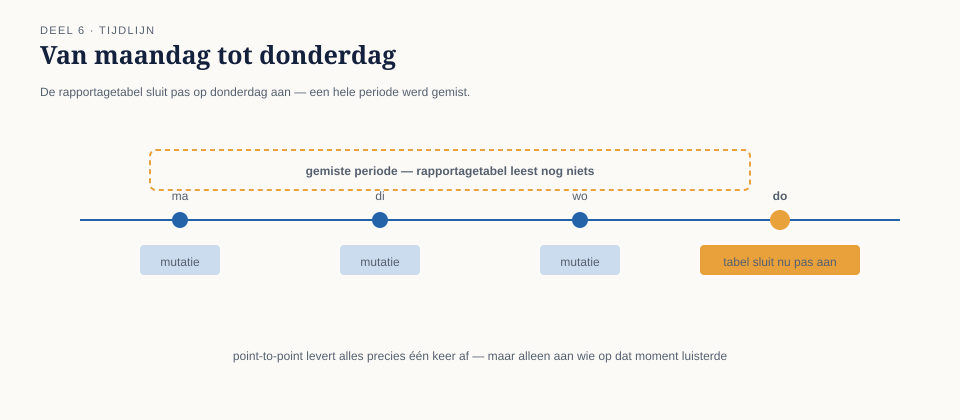
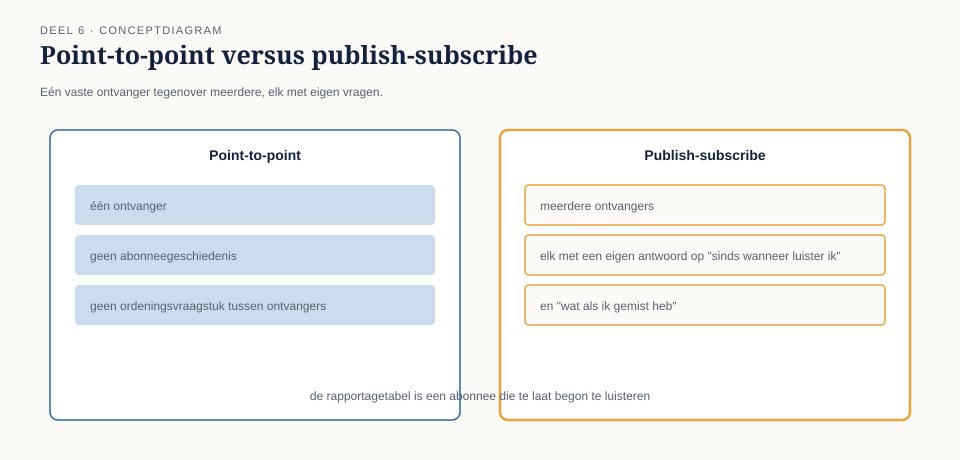

Cursus Enterprise Integration Patterns · Niveau 1 (Fundament) · Deel 6 van 30
Point-to-point vs. publish-subscribe kanalen, verdiept
In deel 2 is het onderscheid tussen point-to-point en publish-subscribe geïntroduceerd als een keuze die "vroeg in het ontwerp" gemaakt moet worden. Bij Meridiaan bleek die vroege keuze niet vroeg genoeg te zijn gemaakt: het mutatie-gebeurd-kanaal werd aanvankelijk gebouwd als publish-subscribe met twee geabonneerden, het Nabestaandenloket en de audit-trail. Toen drie maanden later een derde geabonneerde nodig bleek — een nieuwe rapportagetabel voor de risicomanagementafdeling — leek dat triviaal: nog een abonnee erbij.
7secties
2figuren
10controlevragen
1kernzinnen
Niveau 1: ① Van synchroon naar asynchroon: waarom messaging → ② Messagingfundamenten: kanaal, bericht, endpoint → ③ Message Construction: command, event, document en request-reply → ④ Basisrouting: content-based router en message filter → ⑤ Basistransformatie: translator, envelope wrapper, normalizer → ⑥ Point-to-point vs. publish-subscribe kanalen, verdiept (hier) → ⑦ Betrouwbaarheid I: garanties en idempotentie → ⑧ Betrouwbaarheid II: volgorde en guaranteed delivery → ⑨ Foutafhandeling basis: dead letter channel en invalid message channel → ⑩ Examentraining en capstone: de verdediging
In deel 2 is het onderscheid tussen point-to-point en publish-subscribe geïntroduceerd als een keuze die "vroeg in het ontwerp" gemaakt moet worden. Bij Meridiaan bleek die vroege keuze niet vroeg genoeg te zijn gemaakt: het mutatie-gebeurd-kanaal werd aanvankelijk gebouwd als publish-subscribe met twee geabonneerden, het Nabestaandenloket en de audit-trail. Toen drie maanden later een derde geabonneerde nodig bleek — een nieuwe rapportagetabel voor de risicomanagementafdeling — leek dat triviaal: nog een abonnee erbij.
Het probleem werd zichtbaar in de eerste testweek. De rapportagetabel werd pas op donderdag aangesloten, maar de eerste rapportagevraag ("hoeveel dienstverbandmutaties zijn er deze maand geweest") verwachtte ook de mutaties van maandag tot en met woensdag. Die waren echter al gepubliceerd vóórdat de rapportagetabel bestond — en waren, zoals bij de meeste publish-subscribe-implementaties, allang niet meer beschikbaar op het kanaal. De risicomanagementafdeling constateerde een week later dat er "mutaties ontbraken", wat feitelijk geen fout was: de gebeurtenissen waren precies zo behandeld als het patroon voorschrijft. Ze waren gewoon te laat komen luisteren.
Dit deel gaat over wat "een abonnee toevoegen" precies betekent, en over drie ontwerpvragen die bij point-to-point vanzelfsprekend zijn maar bij publish-subscribe expliciet beantwoord moeten worden.

Figuur 6-1 — tijdlijn van maandag tot donderdag: mutatiegebeurtenissen op het kanaal op ma/di/wo, de rapportagetabel sluit pas op donderdag aan, met een duidelijke visuele "gemiste periode" ervoor
02
6.1 Wat point-to-point garandeert, vanzelf
Sectie 2 van 7
Bij een point-to-point-kanaal is er precies één ontvanger per bericht — ook als er meerdere consumenten naar hetzelfde kanaal luisteren (bijvoorbeeld voor schaalbaarheid), wordt elk individueel bericht door precies één van hen opgepikt en verwerkt. Dit brengt twee eigenschappen met zich mee die zelden apart worden benoemd omdat ze zo vanzelfsprekend aanvoelen:
Er is precies één verantwoordelijke voor elk bericht. Als het bericht is verwerkt, is de taak gedaan. Er is geen vraag "wie heeft dit nog meer nodig" — het antwoord is per definitie "niemand anders, want er is maar één ontvanger".
Een nieuwe consument die zich aansluit, hoeft niet met terugwerkende kracht iets te weten. Een tweede worker die aan een bestaand point-to-point-kanaal wordt toegevoegd, pakt simpelweg berichten op die ná zijn aansluiting binnenkomen (of nog in de wachtrij staan) — er is geen concept van "gemiste geschiedenis", want elk bericht wordt sowieso maar één keer verwerkt, door wie dan ook het eerst beschikbaar is.
Deze twee eigenschappen zijn precies de reden dat het Nabestaandenloket-incident bij point-to-point nooit had kunnen gebeuren zoals het gebeurde: bij point-to-point is er geen "ik was niet op tijd geabonneerd", omdat er geen abonnement is — er is alleen een wachtrij die wacht tot iemand het bericht ophaalt.
Controlevraag — Opdracht 6.1 — Had point-to-point dit voorkomen?
Uit Werkboek deel 6, Opdracht 6.1 — Had point-to-point dit voorkomen?
Leg uit waarom het incident uit 6.0 (de rapportagetabel die een week "miste") bij een point-to-point-kanaal niet op dezelfde manier had kunnen gebeuren. Is het risico bij point-to-point volledig afwezig, of alleen anders van aard?
→Uitwerking tonenToon
Bij point-to-point is er geen concept van "abonnement" en dus ook geen concept van "gemiste geschiedenis vóór het abonnement" — elk bericht wordt precies één keer verwerkt, door wie dan ook beschikbaar is op het moment dat het bericht wordt opgehaald. Een laat aangesloten consument pakt gewoon berichten op die na zijn aansluiting binnenkomen of nog in de wachtrij staan; er is niets dat hij structureel "mist" in de zin van het incident.
Het risico is niet volledig afwezig, wel anders van aard: bij point-to-point kan een bericht wél verloren gaan als de wachtrij zelf leegraakt vóórdat een consument beschikbaar is (afhankelijk van bewaartermijn-instellingen), maar dat is een andere vraag — bewaring en betrouwbaarheid, onderwerp van deel 7 — dan het abonneegeschiedenis-vraagstuk van dit deel.
Wat je hier moet meenemen: "point-to-point heeft dit probleem niet" betekent niet "point-to-point heeft geen problemen" — het betekent dat dít specifieke probleem (gemiste geschiedenis door laat abonneren) structureel niet kan optreden, omdat het concept "abonneren" er niet bestaat.
03
6.2 Wat publish-subscribe expliciet vraagt
Sectie 3 van 7
Bij publish-subscribe verandert dit fundamenteel: elke geabonneerde ontvangt een eigen kopie van elk bericht, en of iets "gemist" wordt, hangt volledig af van ontwerpbeslissingen die bij point-to-point niet eens bestaan. Drie vragen moeten expliciet worden beantwoord, en het niet-beantwoorden ervan is zelf ook een antwoord — meestal het slechtst mogelijke.
Vraag 1: wat gebeurt er met berichten die zijn gepubliceerd vóórdat een abonnee bestond? Het standaardantwoord van de meeste messaging-technologieën is: niets — die berichten zijn domweg niet meer beschikbaar voor een laat aangesloten abonnee, precies zoals bij de rapportagetabel. Als dit niet het gewenste gedrag is, moet er expliciet een mechanisme komen: bijvoorbeeld een gedeeld archief waar nieuwe abonnees historische gebeurtenissen uit kunnen "inhalen" (in niveau 3 uitgewerkt onder event sourcing, deel 24), of simpelweg de afspraak dat een nieuwe abonnee altijd pas na een geplande koppelmoment wordt aangesloten, met een handmatige inhaalslag voor de periode ervoor.
Vraag 2: wat gebeurt er als een bestaande abonnee tijdelijk niet luistert? Bij een storing, onderhoud of een crash mist een publish-subscribe-abonnee berichten die in die periode zijn gepubliceerd — tenzij de gekozen technologie en configuratie expliciet garanderen dat gemiste berichten bij terugkomst alsnog worden afgeleverd (vaak "persistent subscriptions" of vergelijkbare mechanismen genoemd, technologie-afhankelijk en dus onderwerp van de Toolbijlage). Zonder die garantie is een tijdelijke storing bij één abonnee een permanent gat in zijn gegevens, ook al functioneerden de andere abonnees en de zender gewoon door.
Vraag 3: is elke abonnee onafhankelijk van de andere, of veronderstelt er één iets over de ander? Bij Meridiaan bleek de audit-trail impliciet te veronderstellen dat het Nabestaandenloket de mutatie eerst had verwerkt — een aanname die nergens was vastgelegd en die alleen aan het licht kwam toen de twee abonnees door een tijdelijke vertraging bij het Nabestaandenloket in een andere volgorde werden afgerond dan verwacht. Publish-subscribe garandeert geen enkele volgordelijke afhankelijkheid tussen abonnees — als die afhankelijkheid nodig is, moet ze expliciet worden ontworpen (bijvoorbeeld door de audit-trail zelf te laten wachten op een bevestiging van het Nabestaandenloket, wat een aparte, bewuste ontwerpkeuze is en geen automatisch gevolg van "ze zijn allebei geabonneerd").
Kernzin 6 van de cursus: bij publish-subscribe is niets gegarandeerd wat je niet expliciet hebt ontworpen — elke aanname die bij point-to-point "vanzelfsprekend" aanvoelde, moet opnieuw en met opzet worden gemaakt.

Figuur 6-2 — twee kolommen naast elkaar: point-to-point (één ontvanger, geen abonneegeschiedenis, geen ordeningsvraagstuk tussen ontvangers) versus publish-subscribe (meerdere ontvangers, elk met een eigen antwoord nodig op de drie vragen)
Controlevraag — Opdracht 6.2 — De drie vragen toepassen
Uit Werkboek deel 6, Opdracht 6.2 — De drie vragen toepassen
Een vierde abonnee wordt toegevoegd aan het mutatie-gebeurd-kanaal: een extern dashboard voor de bestuurssecretaris, dat elke maandagochtend een overzicht toont van mutaties uit de voorgaande week.
Beantwoord voor deze nieuwe abonnee de drie vragen uit 6.2.
→Uitwerking tonenToon
Vraag 1 (historie vóór aansluiting): Ja, relevant — als het dashboard op een woensdag wordt aangesloten, mist de eerstvolgende maandagoverzicht de mutaties van vóór woensdag, tenzij expliciet een inhaalmechanisme wordt gebouwd of de eerste rapportageperiode bewust wordt overgeslagen met een duidelijke melding daarover aan de bestuurssecretaris.
Vraag 2 (tijdelijke afwezigheid): Voor een wekelijks dashboard is dit minder kritisch dan voor bijvoorbeeld het Nabestaandenloket — als het dashboard een dag offline is, hoeft dat niet direct tot dataverlies te leiden mits de onderliggende opslag (waaruit het wekelijkse overzicht wordt samengesteld) onafhankelijk van de kanaalverbinding blijft bijhouden wat er is gebeurd. Dit is echter geen automatisme; het moet expliciet zo gebouwd worden.
Vraag 3 (volgorde-afhankelijkheid): Waarschijnlijk niet van toepassing — een wekelijks overzicht heeft doorgaans geen behoefte aan de exacte volgorde waarin mutaties zijn verwerkt, alleen aan het totaalbeeld over de week. Dit is een voorbeeld van een abonnee waarbij deze specifieke vraag met "nee, niet relevant" beantwoord kan worden — wat op zich ook een expliciet antwoord is, geen automatisme.
Wat je hier moet meenemen: niet elke vraag is voor elke abonnee even kritisch — het punt is niet dat alle drie altijd een uitgebreid mechanisme vergen, maar dat alle drie bewust beantwoord moeten worden, ook als het antwoord "niet relevant hier" is.
04
6.3 Een abonnee toevoegen is geen gratis operatie
Sectie 4 van 7
Het Nabestaandenloket-incident begon met de veronderstelling dat "nog een abonnee erbij" een kleine, risicovrije toevoeging was. Dat klopt voor de zender: die hoeft niets te wijzigen — dat is precies de ontkoppeling die publish-subscribe belooft. Maar voor het geheel is het geen gratis operatie, want elke nieuwe abonnee introduceert opnieuw de drie vragen uit 6.2, specifiek voor die abonnee.
Een praktisch controlepunt bij het aansluiten van een nieuwe abonnee op een bestaand publish-subscribe-kanaal:
Heeft deze abonnee historische gegevens nodig van vóór zijn aansluitmoment? Zo ja: hoe wordt dat opgelost — inhaalmechanisme, of bewust geaccepteerd gat?
Wat gebeurt er met deze abonnee specifiek als hij tijdelijk offline is? Is dataverlies voor hem acceptabel, of niet?
Veronderstelt deze abonnee iets over de volgorde ten opzichte van bestaande abonnees, of over iets dat een andere abonnee eerst gedaan moet hebben?
Bij Meridiaan is dit controlepunt na het incident als vaste stap in het aansluitproces van nieuwe abonnees opgenomen — niet als bureaucratie, maar omdat de kosten van het overslaan ervan (een week onverklaarbaar "missende" data, en het bijbehorende vertrouwensverlies bij de risicomanagementafdeling) hoger bleken dan de kosten van de vraag zelf.
Controlevraag — Opdracht 6.3 — De verborgen aanname vinden
Uit Werkboek deel 6, Opdracht 6.3 — De verborgen aanname vinden
In 6.2 (vraag 3) bleek de audit-trail impliciet te veronderstellen dat het Nabestaandenloket eerst klaar was. Bedenk, voor een ander stel abonnees op hetzelfde kanaal (bijvoorbeeld: de risicomanagement-rapportagetabel en het externe dashboard uit opdracht 6.2), een vergelijkbare verborgen aanname die pas zichtbaar wordt bij een timingverandering.
→Uitwerking tonenToon
Er is geen uniek juist antwoord; dit is een oefenopdracht in het herkennen van het patroon. Een plausibel voorbeeld: het externe dashboard voor de bestuurssecretaris toont naast het aantal mutaties ook een "risicoscore" die het ophaalt uit de risicomanagement-rapportagetabel — impliciet aannemend dat die tabel de mutaties van dezelfde week al heeft verwerkt vóórdat het dashboard zijn maandagoverzicht samenstelt. Als de rapportagetabel toevallig vertraagd is (bijvoorbeeld door een eigen onderhoudsvenster), toont het dashboard een risicoscore die nog niet de laatste mutaties meeneemt, zonder dat dit ergens zichtbaar wordt gemaakt.
Wat je hier moet meenemen: verborgen volgorde-aannames tussen onafhankelijke abonnees zijn zelden opzettelijk ingebouwd — ze ontstaan doordat het "toevallig meestal zo werkt" tijdens ontwikkeling en testen, en worden pas zichtbaar bij een afwijkende timing in productie.
05
6.4 Terugkoppeling naar de kanaalkeuze uit deel 2
Sectie 5 van 7
Deel 2 introduceerde de regel: een kanaal is óf point-to-point óf publish-subscribe, nooit allebei tegelijk voor dezelfde toepassing. Dit deel voegt daar een praktische consequentie aan toe: de keuze voor publish-subscribe is een belofte aan elke toekomstige abonnee dat hij zelf verantwoordelijk is voor de drie vragen uit 6.2 — niet een belofte dat het platform dat voor hem regelt, tenzij expliciet zo gebouwd.
Dit is geen pleidooi om publish-subscribe te vermijden — het blijft, zoals in deel 2 vastgesteld, het juiste patroon zodra meerdere onafhankelijke partijen op hetzelfde feit moeten kunnen reageren (signaal 3 uit deel 1). Het is een pleidooi om de garanties die je nodig hebt, met opzet in te bouwen, in plaats van aan te nemen dat "geabonneerd zijn" ze automatisch meebrengt.
Controlevraag — Opdracht 6.4 — Point-to-point of publish-subscribe, met de verdiepte blik
Uit Werkboek deel 6, Opdracht 6.4 — Point-to-point of publish-subscribe, met de verdiepte blik
Herbeoordeel de vier scenario's uit opdracht 2.3 (deel 2), nu met de drie vragen uit dit deel erbij. Kies er twee uit en beantwoord voor elk: als het publish-subscribe is, wat is het antwoord op de drie vragen?
Een signaal dat een deelnemer is overleden — relevant voor uitkeringsadministratie, Nabestaandenloket én communicatieafdeling.
Een signaal dat de nachtelijke batchverwerking is afgerond — relevant voor monitoring én voor een vervolgproces dat pas mag starten na afronding.
→Uitwerking tonenToon
a. Publish-subscribe, terecht gekozen in deel 2. Vraag 1: waarschijnlijk niet kritisch — een overlijdenssignaal is zeldzaam genoeg dat elke abonnee vanaf dag één van zijn bestaan wordt aangesloten, maar dit moet wel expliciet worden vastgesteld, niet aangenomen. Vraag 2: wél kritisch — een gemist overlijdenssignaal bij de uitkeringsadministratie kan leiden tot een foutieve doorbetaling, dus hier is een garantie tegen dataverlies bij tijdelijke afwezigheid noodzakelijk, geen "nice to have". Vraag 3: de drie abonnees zijn functioneel onafhankelijk van elkaar — geen van hen hoeft te wachten tot een andere klaar is.
b. Publish-subscribe. Vraag 1: niet relevant, dit is een dagelijks terugkerend signaal zonder betekenisvolle historie om in te halen. Vraag 2: kritisch voor het vervolgproces (als het gemist wordt, start het proces nooit), minder kritisch voor monitoring (een gemiste melding is vervelend maar niet functioneel schadelijk). Vraag 3: hier ligt een addertje — het vervolgproces reageert op het signaal als trigger, wat impliciet veronderstelt dat de batch écht klaar is wanneer het signaal komt. Als "klaar" zelf uit meerdere deelstappen bestaat die niet allemaal gegarandeerd zijn afgerond op het moment van signaleren, ontstaat hetzelfde soort verborgen aanname als in opdracht 6.3.
Wat je hier moet meenemen: hetzelfde patroontype (publish-subscribe, terecht gekozen) kan bij verschillende abonnees compleet verschillende antwoorden op dezelfde drie vragen vereisen — er is geen vast "publish-subscribe-recept" dat overal hetzelfde wordt toegepast.
06
Samenvatting van deel 6
Sectie 6 van 7
Point-to-point garandeert vanzelf: precies één verantwoordelijke per bericht, en geen concept van "gemiste geschiedenis" voor nieuwe consumenten.
Publish-subscribe garandeert dat niet vanzelf — drie vragen moeten expliciet beantwoord worden: wat gebeurt er met berichten van vóór het abonnement, wat gebeurt er bij tijdelijke afwezigheid van een abonnee, en veronderstelt een abonnee iets over de volgorde ten opzichte van andere abonnees.
Een nieuwe abonnee toevoegen is voor de zender gratis, maar voor het geheel niet — elke nieuwe abonnee herintroduceert de drie vragen, specifiek voor die abonnee.
Kernzin 6: bij publish-subscribe is niets gegarandeerd wat je niet expliciet hebt ontworpen.
Zelftoets deel 6
Uit Werkboek deel 6, Zelftoets (letterlijk overgenomen)
1Wat garandeert point-to-point vanzelf, dat publish-subscribe niet vanzelf garandeert?Toon antwoord
Precies één verantwoordelijke per bericht, en geen concept van "gemiste geschiedenis" voor nieuw aangesloten consumenten.
2Noem de drie vragen die bij elke nieuwe publish-subscribe-abonnee expliciet beantwoord moeten worden.Toon antwoord
Wat gebeurt er met berichten van vóór het abonnement; wat gebeurt er bij tijdelijke afwezigheid van een abonnee; veronderstelt een abonnee iets over de volgorde ten opzichte van andere abonnees.
3Wat is de kernzin van dit deel, in eigen woorden?Toon antwoord
Bij publish-subscribe is niets gegarandeerd wat je niet expliciet hebt ontworpen — elke aanname die bij point-to-point vanzelfsprekend aanvoelde, moet opnieuw en met opzet worden gemaakt.
4Waarom was "nog een abonnee erbij" bij het Nabestaandenloket-incident geen gratis operatie, ook al hoefde de zender niets te wijzigen?Toon antwoord
Omdat elke nieuwe abonnee de drie vragen uit 6.2 opnieuw introduceert, specifiek voor die abonnee — de zender hoeft niets aan te passen, maar het geheel krijgt er wel nieuwe, onbeantwoorde vragen bij.
5Wat ging er mis tussen de audit-trail en het Nabestaandenloket, en wat voor type aanname was dat?Toon antwoord
De audit-trail veronderstelde impliciet dat het Nabestaandenloket eerst klaar was, zonder dat die afhankelijkheid ergens was vastgelegd of afgedwongen — een verborgen volgorde-aanname tussen twee in principe onafhankelijke abonnees.
6Is publish-subscribe een patroon dat je zou moeten vermijden op basis van dit deel? Waarom wel/niet?Toon antwoord
Nee — het blijft het juiste patroon zodra meerdere onafhankelijke partijen op hetzelfde feit moeten kunnen reageren (signaal 3 uit deel 1). De les is niet "vermijd het", maar "bouw de garanties die je nodig hebt met opzet, in plaats van aan te nemen dat abonnement ze automatisch meebrengt".
07
Vooruitblik
Sectie 7 van 7
Deel 7 gaat over betrouwbaarheid: wat "gegarandeerd" in de vorige zin precies kan betekenen, met idempotentie als eerste bouwsteen — hoe voorkom je dat een bericht dat toch twee keer wordt afgeleverd, ook twee keer wordt verwerkt?
Verder naar deel 7
Deel 7 — Betrouwbaarheid I: garanties en idempotentie — bouwt voort op wat hier is behandeld.